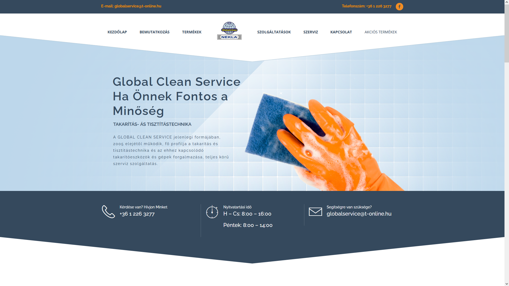

Egy régi weblap újratervezve

Az eredeti GlobalClean weblap két alapvető tulajdonság hiányában szenvedett. Egyrészt a weboldalon elhelyezett szövegek és képek a célközönség ismeretének teljes hiányában íródtak. Általánosítások, távolságtartás és céltalanság jellemzi a bekezdéseket, amely az olvasót olyan informáltság állapotában hagyja a cég megbízhatóságát, profilját illetően, amilyenben érkezett. A személytelenség hiánya, a kellő cégismeret hiányára és a vevőkör megismerésének mellőzésére vezethető vissza.
Másrészt a weboldal elavult stílusában, ezt semmiképp nem rónám fel a készítőknek, ők a kor stílusához híven készítették el desing-ukat, sok animációval, túlzó effektekkel és zavaróan megvalósított fejléc lecsúsztatással, amik mind-mind elvonják az ember figyelmét, ahelyett hogy felkeltenék, vagy a tényleges tartalomra irányítanák azt.
Ezekből a megfontolásokból kiindulva, és a konkurencia weboldalait figyelembe véve, egy letisztult honlapot képzeltem el magam előtt, amely pontosan annyit mond, amennyit közölni akar, de azt célratörő módon, konkrét tényekkel teszi. Így született meg az újragondolt főoldal, a flat design-t követve.